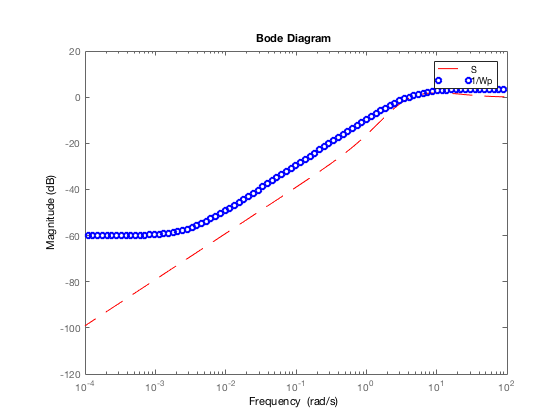
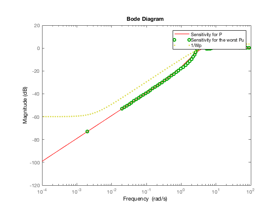

q5
Contents
5.a
P = tf(1,[1 -1]); C = tf([5.8 9],[0.04 1 0]); S = 1/(1+P*C); Wp = tf([0.667 3],[1 0.003]); normTol = 0.001; norm(Wp*S,inf,normTol)<=1
ans = logical 1
5.b
figure bodemag(S,'r--',1/Wp,'bo') legend('S','1/Wp')
5.c
Based on the results of 4.g, the system is stable, moreover we can verify it by using the function robstab.
delta = ultidyn('delta',[1 1],'bound',1); Pu = P*(1+0.4*delta); Snew = 1/(1+Pu*C); [stabmarg,wcu] = robstab(Snew);
5.d
[wcg,wcu] = wcgain(Wp/(1+Pu*C))
% specific stable linear system
wcu.delta
wcg =
struct with fields:
LowerBound: 2.1644
UpperBound: 2.1683
CriticalFrequency: 3.4948
wcu =
struct with fields:
delta: [1×1 ss]
ans =
A =
x1 x2 x3 x4
x1 -4.699 -9.398 0 6.815
x2 0 -4.699 0 6.815
x3 0 0 -2.471 2.471
x4 0 0 -2.471 -2.471
B =
u1
x1 0
x2 0
x3 2.223
x4 2.223
C =
x1 x2 x3 x4
y1 -3.066 -3.066 0 2.223
D =
u1
y1 0
Continuous-time state-space model.
5.e
Pu_worse = P*(1+0.4*wcu.delta); figure bodemag(S,'r-',P,'go',Pu_worse,'b+',1/Wp,'y.') legend('S','P','Worst Case Pu','1/Wp')